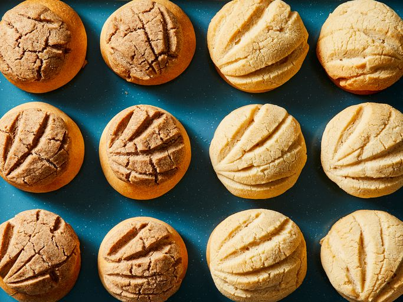

Conchas (Mexican Sweet Bread)
Conchas are Mexican sweetened bread rolls with a crunchy topping. Always a crowd favorite!
I got this recipe from my friend's mom, who owns a Mexican bakery. They made these one day for my family, and they loved them — even my brother, who is so picky.
Now they ask for them all the time. Although these are a bit time-consuming, they're well worth it in the end!
Satisfy your sweet tooth with this irresistibly soft conchas recipe.
Ingredients
Bread:
- ½ cup warm water
- 2 ½ teaspoons yeast
- 4 cups all-purpose flour
- ½ cup evaporated milk
- ⅜ cup white sugar
- ⅓ cup butter, melted
- 1 large egg
- 1 teaspoon salt
- ½ teaspoon ground cinnamon
Topping:
- ⅔ cup white sugar
- ½ cup butter, softened
- 1 cup all-purpose flour
- 2 teaspoons ground cinnamon
- 1 teaspoon vanilla extract
Steps
- Gather all ingredients.
- To make the bread: Stir warm water and yeast together in a large bowl; let stand until yeast softens and begins to form a creamy foam, about 5 minutes.
- Mix in 2 cups flour, milk, sugar, melted butter, egg, and salt until combined.
- Gradually mix in remaining 2 cups flour and cinnamon until dough comes together.
- Turn dough out onto a floured surface and knead until smooth and elastic, 6 to 8 minutes. Place in a large greased bowl; turn dough to coat.
- Cover and let rise in a warm place until doubled, about 1 hour.
- Meanwhile, make the topping: Beat sugar and butter in a medium bowl with an electric mixer until light and fluffy.
- Stir in flour until a thick paste forms.
- Divide dough into 12 equal pieces. Shape into balls and place 3 inches apart on a greased cookie sheet.
- Divide each bowl of topping into 6 balls; pat flat.
Place circles of topping on top of dough balls, patting down lightly. Use a knife to cut grooves in the topping like a seashell.
- Cover and let rise until doubled, about 45 minutes.
- Preheat the oven to 375 degrees F (190 degrees C).
- Bake in the preheated oven until lightly golden brown, about 20 minutes.